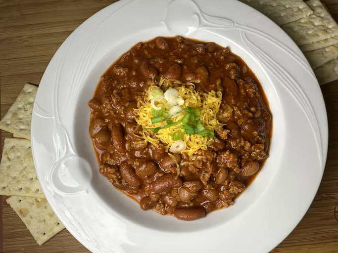

Easy Chilly recipe

Yummy Chilly recipe
You only need 5 ingredients for this crockpot Italian chicken with Italian dressing and Parmesan cheese. Nothing could be easier than this for a weekday meal that's ready when you get home.
Ingredients
- 1 pound lean ground beef
- 15 ounces of tomato sauce
- 15 ounces of can chilli beans
- 2 tablespoons of chilli powder
- Salt and black pepper to taste
Steps
- Heat a large skillet over medium-high heat
- Place chicken in a slow cooker, and pour dressing mixture over chicken.
- Cook and stir ground beef in the hot skillet until
browned and crumbly, 5 to 7 minutes.
- Stir in kidney beans, chili beans, and tomato sauce
- Bring to a boil and stir in chili powder. Reduce heat to a simmer,
and cook, stirring occasionally, until thickened, about 15 minutes
- Season to taste with salt and pepper